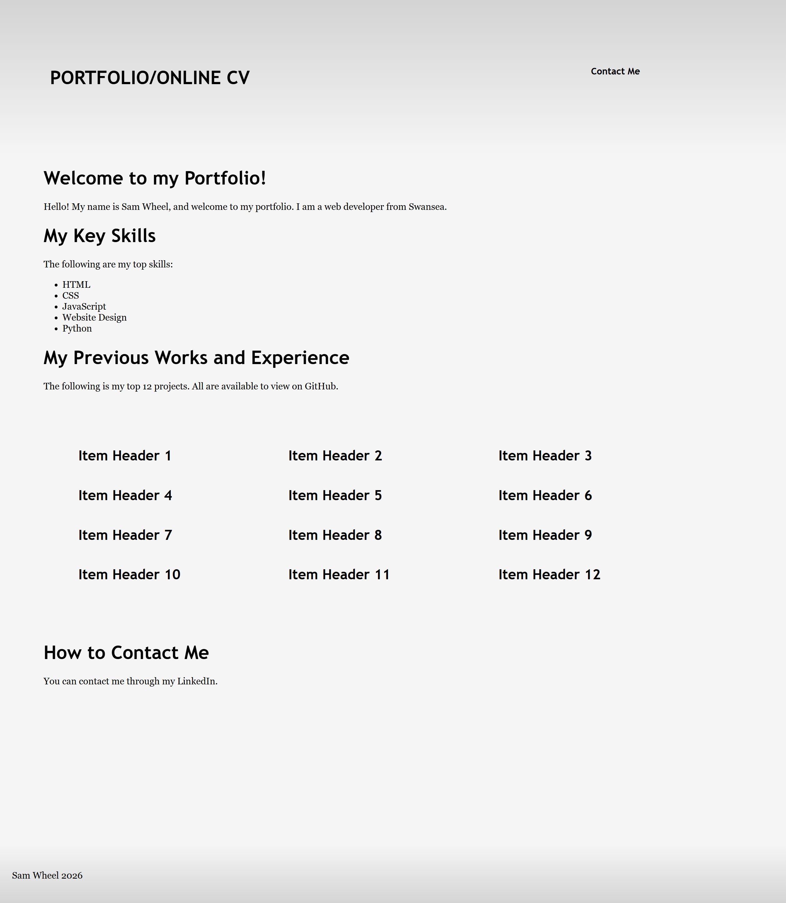
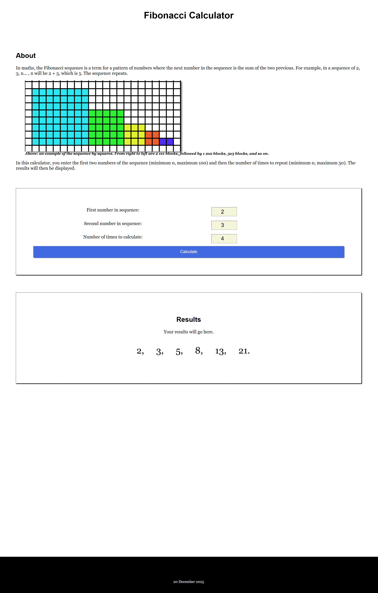
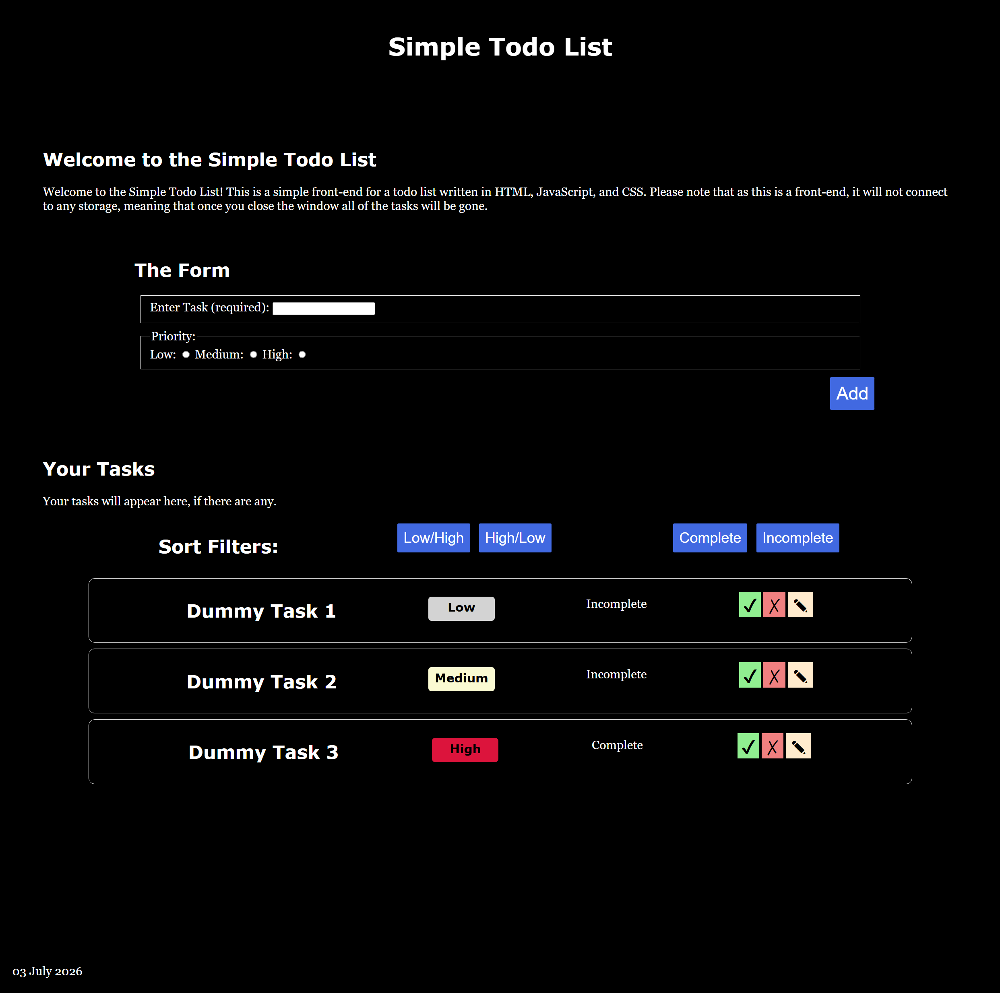
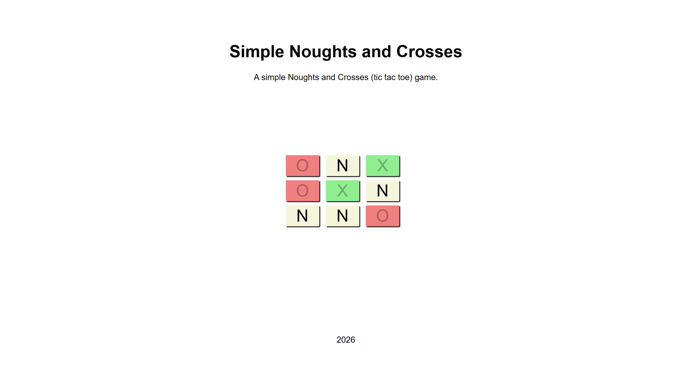

Welcome to my Portfolio!
Hello! My name is Sam Wheel, and welcome to my portfolio. I am a web developer from Swansea.
My Key Skills
The following are my top skills:
- ✔ HTML
- ✔ CSS
- ✔ JavaScript
- ✔ Website Design
- ✔ Python
My Previous Works and Experience
The following is my top 12 projects. All are available to view on GitHub.
My Portfolio
This is my portfolio! You're on it right now.

Normally, a GitHub link will go here, but you're already on it. It was written using HTML and CSS.
Fibonacci Sequence Calculator
This is a Fibonacci Sequence calculator. Enter two numbers to start the sequence off, and then the number of times. It was written using HTML, CSS and JavaScript.

Front-end for a To-do List
This is a simple front-end for a to-do list. It does not connect to any databases, so any tasks entered will be lost when refreshed or closed. It was written using HTML, CSS and JavaScript.

Simple Noughts and Crosses (tic tac toe) Game
This is a single-player noughts and crosses/tictactoe game written in HTML, CSS and JavaScript.
